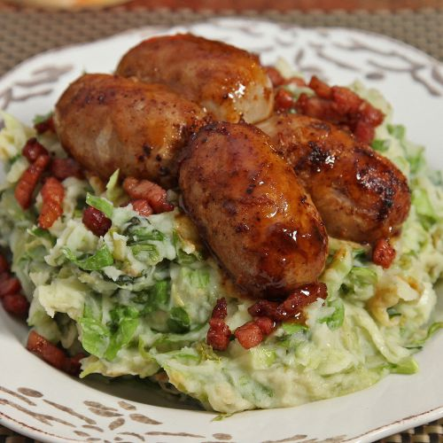

Raw Endive Mash

Description
Raw Endive Mash is a Dutch classic. It mainly consists of raw endive and potatoes, but it is generally served with bacon cubes, Dutch cheese and sausages.
Raw Endive Mash is best served as a main dish and is quite filling. The combination of the cruncy raw endive and the creamy potatoes makes this a
recipe an absolute treat.
Ingredients for 2 servings
- 100g Bacon cubes
- 400g Potatoes
- 100ml Milk
- 20g Butter
- 300g Endive
- some Nutmeg
- Gravy
- Skillet
- Pan
- optional: 50g Old Gouda
Recipe
- Bake the bacon bits in a skillet until they are golden and the most fat has been melted away.
- Clean, or peel, the potatoes and boil them.
- The potatoes are done when you can break them with a fork
- Drain the potatoes.
- Heat the milk (Don't boil!) and add them to the potatoes.
- Add the butter to the mix and mash it all a creamy mix.
- Add the endive and the bacon cubes to the mix and stir.
- optionally: add 50g of Old Gouda.
- Reheat the mixture and add salt, pepper and nutmeg.
- Serve on a plate with gravy and a piece of meat to your liking.